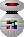

Robot Players
Each robot player is represented by an icon which represents the amount
of calculation that it does and hence roughly how smart it is.
Some robots come with their own icons, in which case you'll have to look
at its rating to see how good it is.
-  Very Stupid Robots
- These robots make their move without even looking at the board,
so they're pretty poor players.
 Stupid Robots
Stupid Robots
- These robots employ a variety of strategies which don't really work
very well.
 Normal Robots
Normal Robots
- These robots are all fairly similar, with their main goal being
to spread their influence a long way across the board.
This is a surprisingly good strategy.
They use the same basic information as Stupid and Clever Robots.
 Clever Robots
Clever Robots
- These robots use successful strategies based on the information
provided to Normal Robots.
 Thinking Robots
Thinking Robots
- These robots use classical artificial intelligence techniques such
as lookahead and board evaluation to try to choose good moves.
However, their computational needs are excessive compared to their
ability.
 Smart Robots
Smart Robots
- These robots do much more computation than any other type of robot,
and are correspondingly more successful.
This type will put a good human player under pressure.
Index